THE APPROACH
The exhibition recreates familiar recess spaces such as the drinks stall, bookshop, and games corner, allowing visitors to step back into a nostalgic primary school environment.
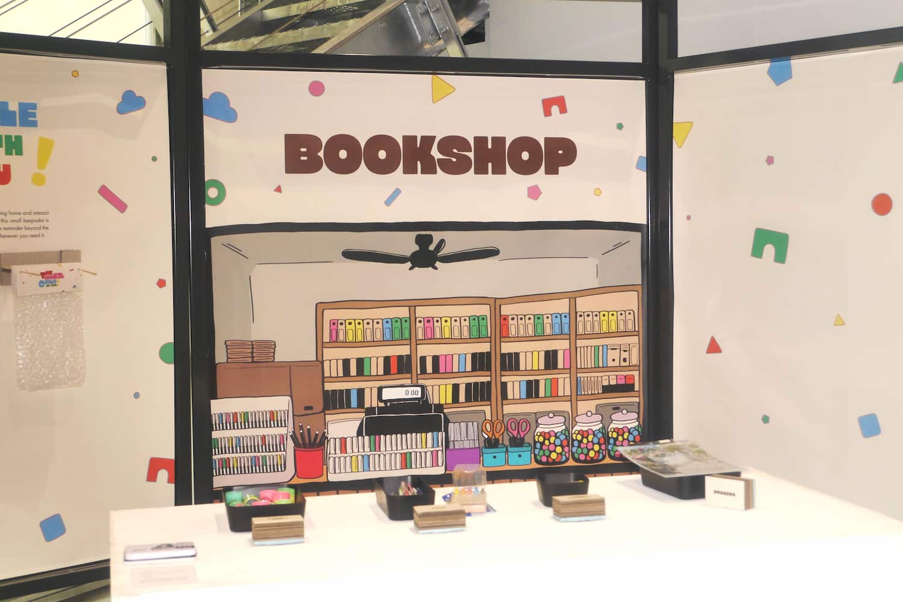
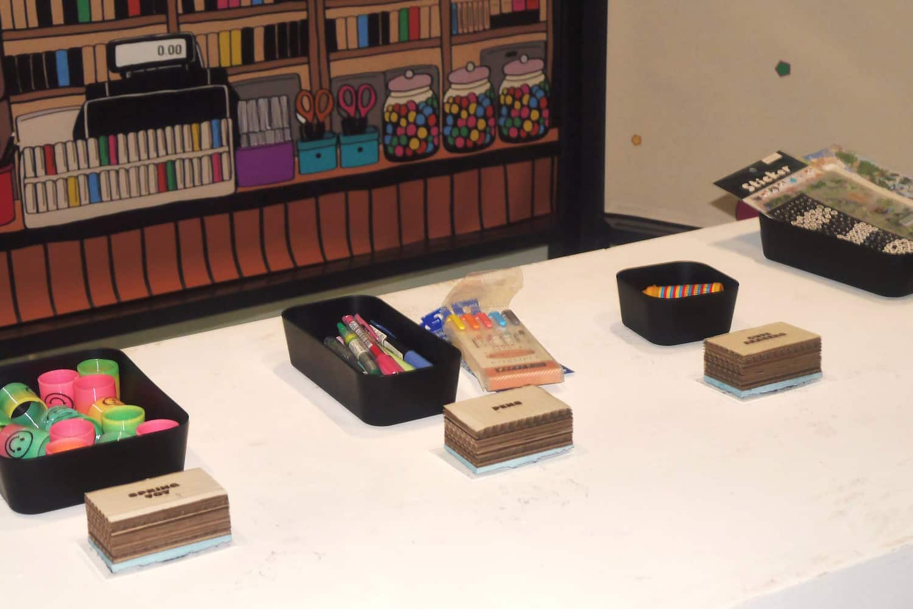
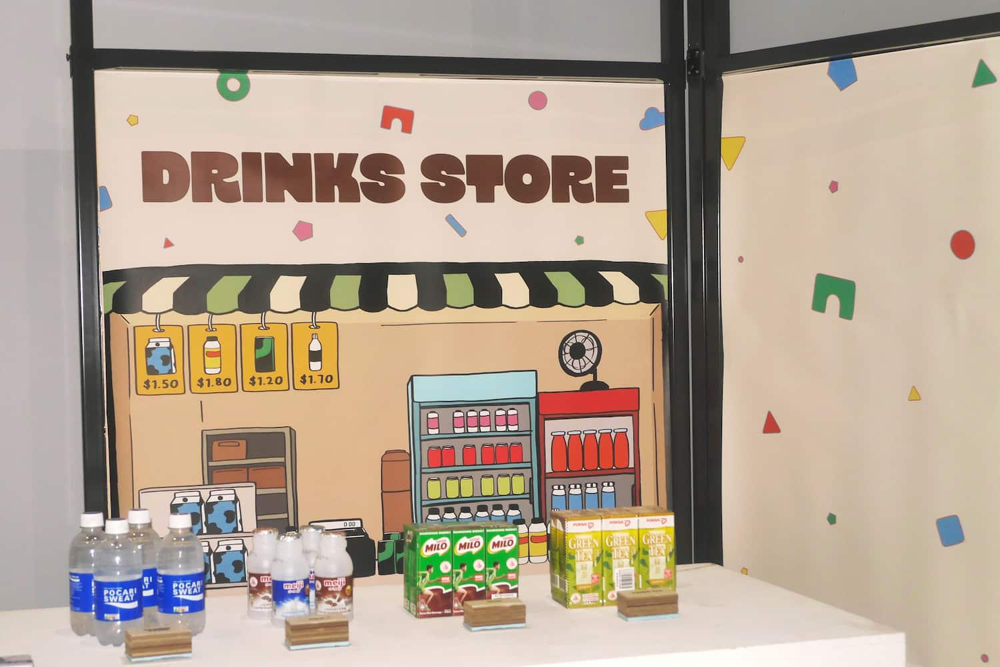
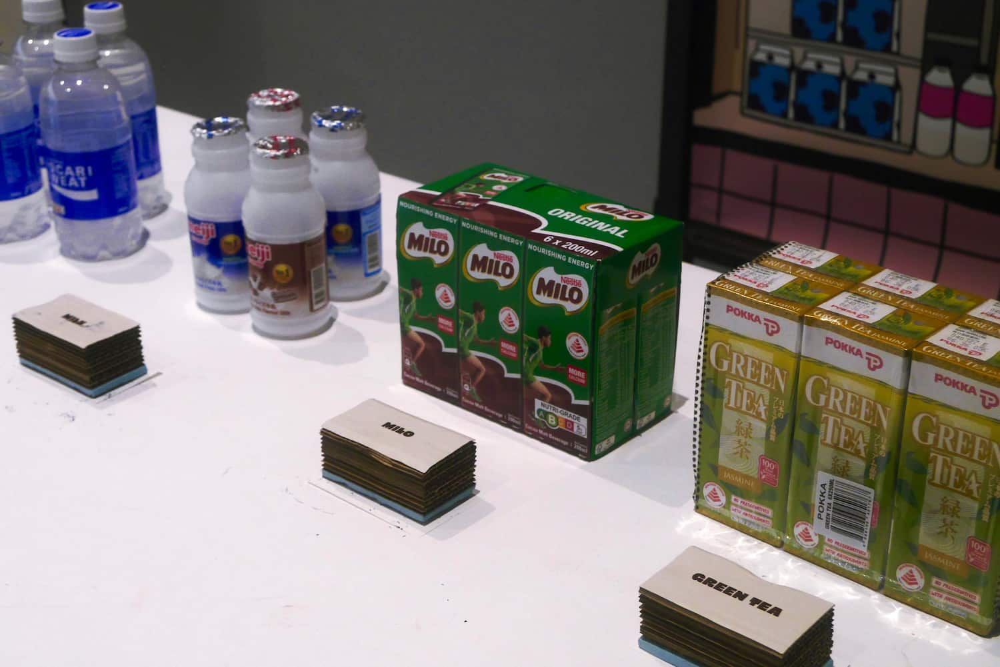
STAMPED CHARACTERS
At each booth, visitors answer simple, instinctive questions and collect stamps that gradually build a unique character made up of different animal parts.
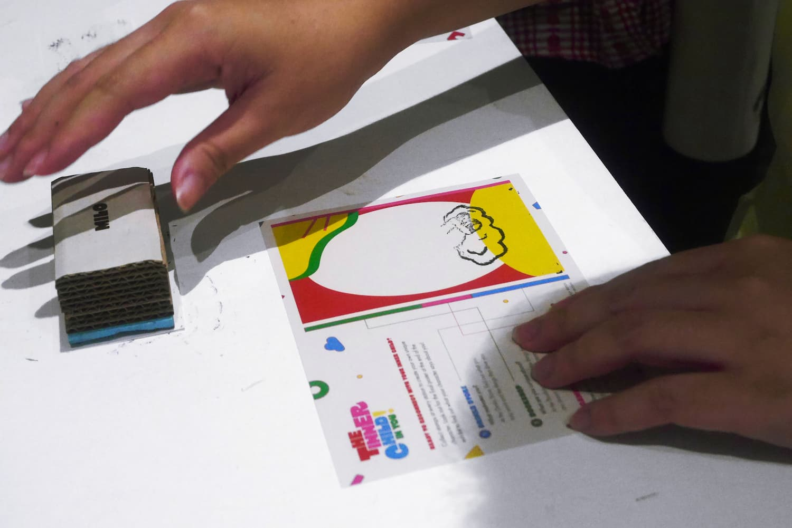
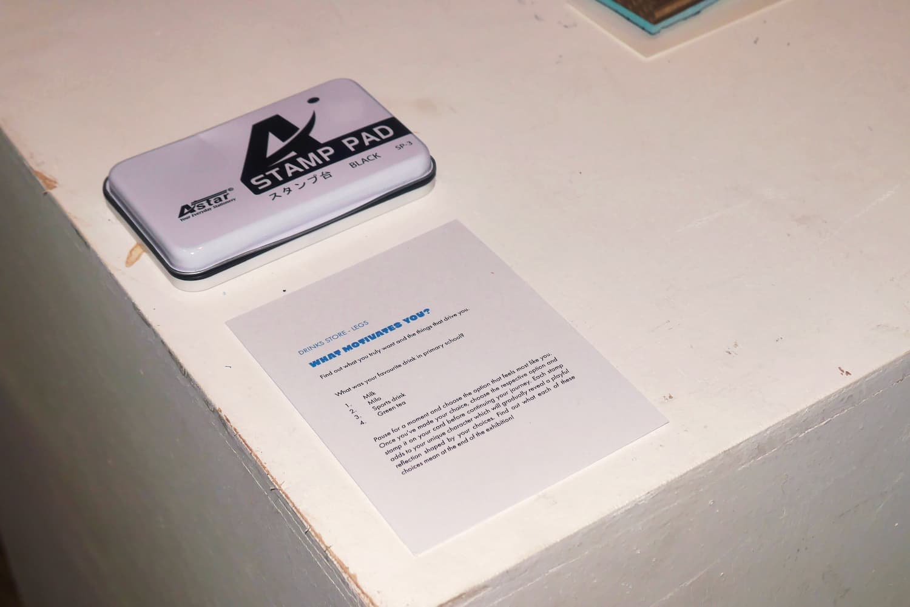
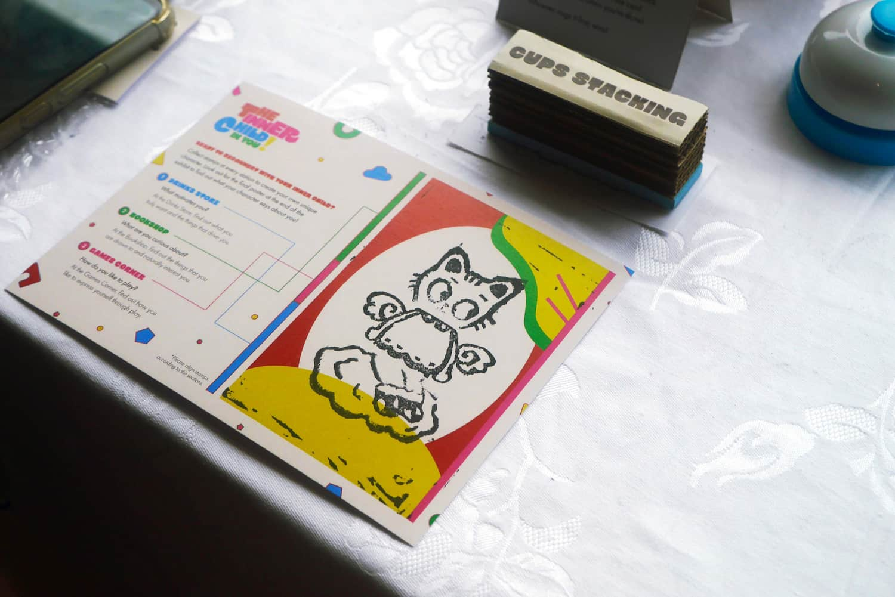
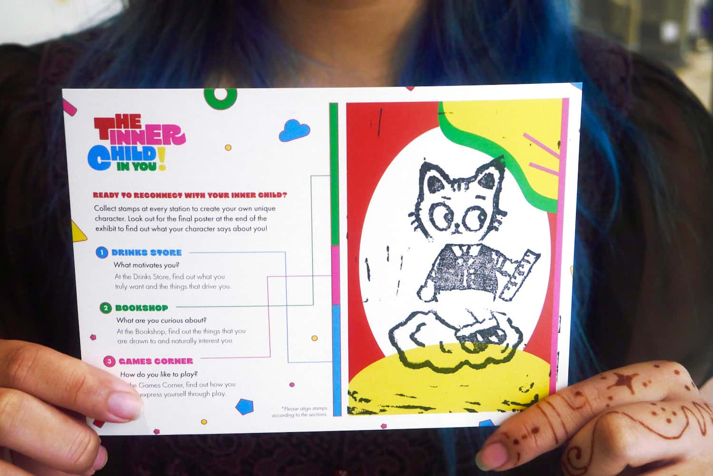
The completed character acts as a playful reflection of their inner child, with a final poster helping visitors interpret what their choices reveal about their curiosities, behaviours, and motivations.
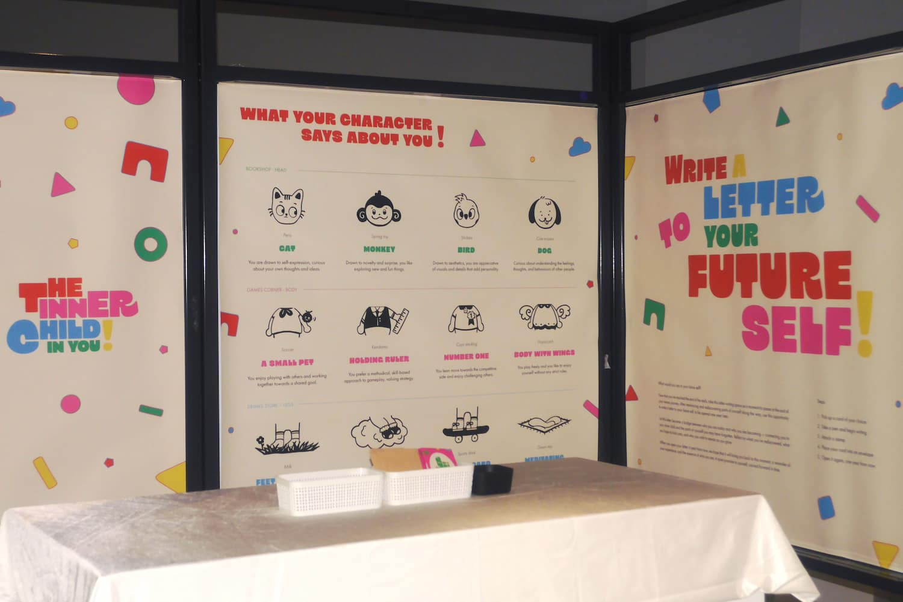
INTERACTIVE ELEMENTS
Additional touchpoints, including interactive games, motivational keepsakes, and a letter-to-your-future-self activity, encourage visitors to reflect not only on who they were as children, but also on who they hope to become in the future.
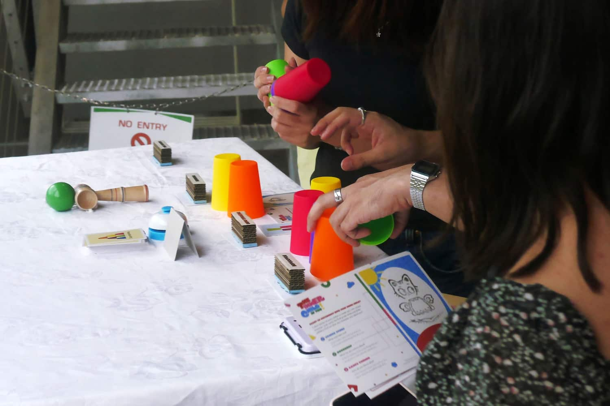
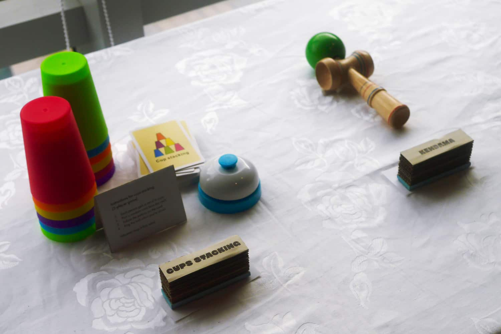
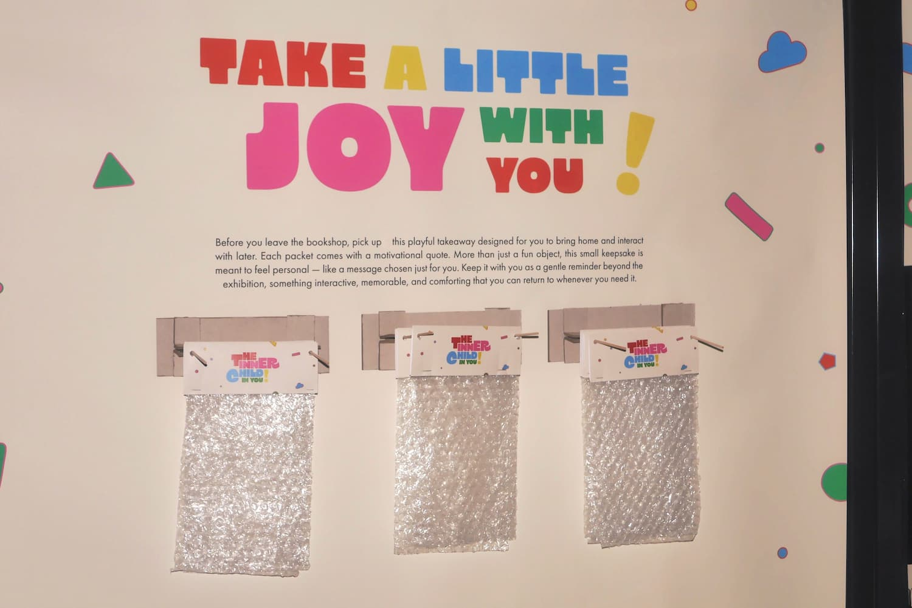
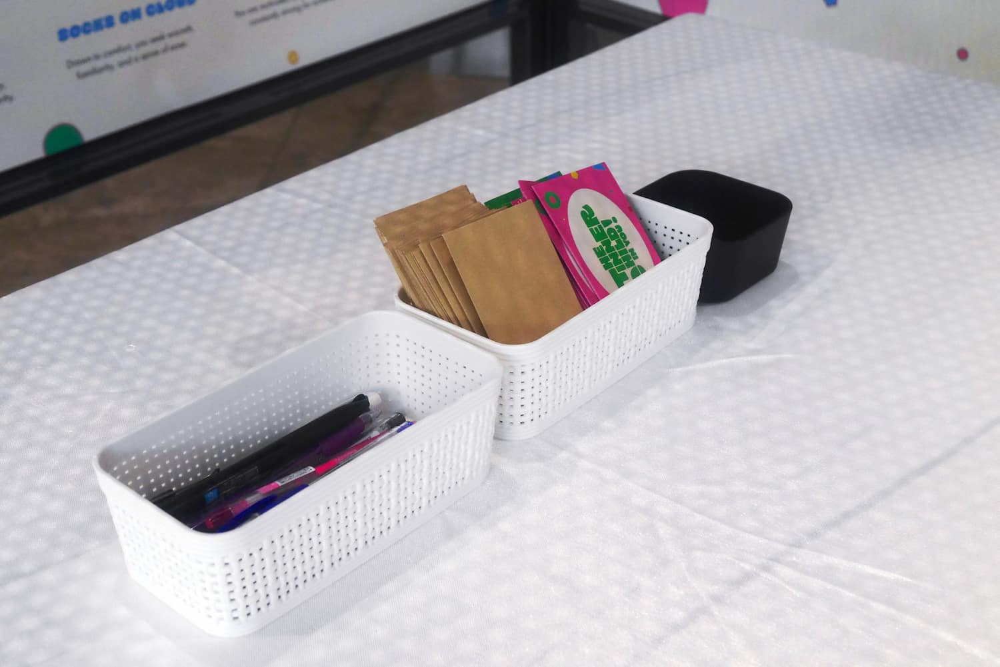
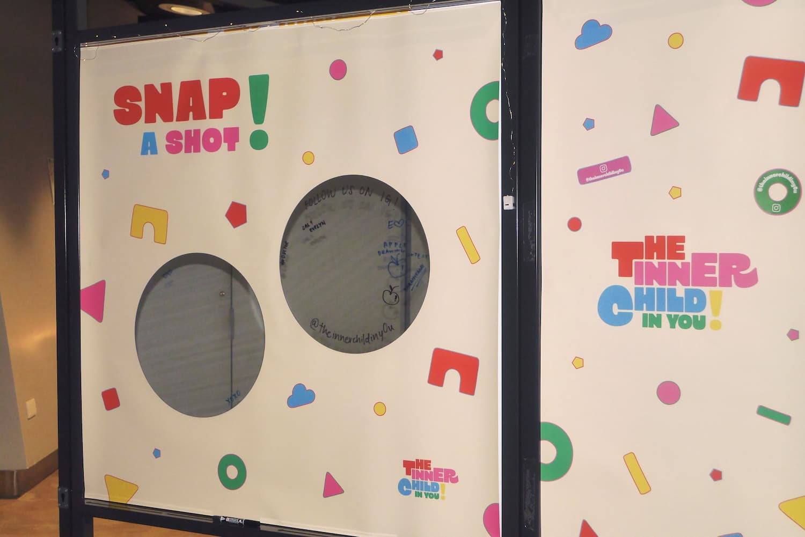
TOOLS
Adobe Illustrator
Adobe Photoshop